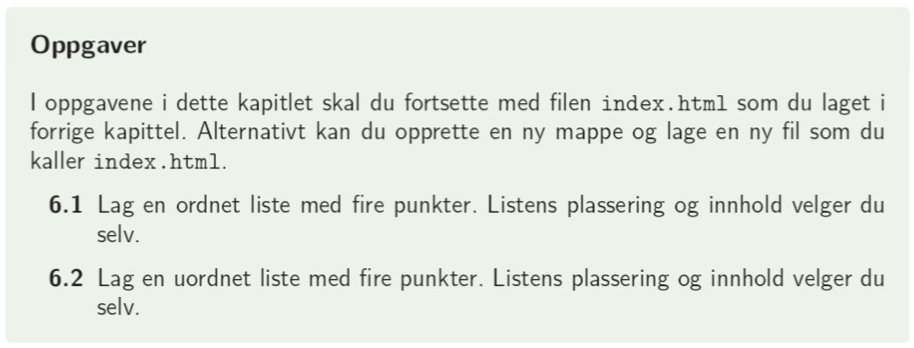

Lister i html har to funksjoner: å kunne liste opp informasjon, og å være en basis for menyer i html. I html forholder vi oss til to typer lister: nummererte og unummererte lister
Taggen for nummerete lister er < ol > (ordered list), der hvert listeelement omgis av < li > < /li >:
< ol >
< li > Listepunkt 1 < /li >
< li > Listepunkt 2 < /li >
< li > Listepunkt 3 < /li >
< /ol >
I css kan vi, i tillegg til å endre farger, skriftstiler, størrelser osv. endre nummereringstype:
ol li {
list-style-type:lower-roman;
}
Ulike typer finner dere her: w3schools
Det går an å endre enkeltlister ved å gi dem en id som ellers:
< ol id="liste1" >
< li > Listepunkt 1 < /li >
< li > Listepunkt 2 < /li >
< li > Listepunkt 3 < /li >
< /ol >
I css defineres da
#liste1 li {
list-style-type:lower-roman;
}
Taggen for unummererte lister er < ul > (uordered list), der hvert listeelement fortsatt omgis av < li > < /li >:
< ul >
< li > Listepunkt < /li >
< li > Listepunkt < /li >
< li > Listepunkt < /li >
< /ul >
Her kan vi også endre listepunkt til for eksempel firkanter
< ul id="liste2" >
< li > Listepunkt 1 < /li >
< li > Listepunkt 2 < /li >
< li > Listepunkt 3 < /li >
< /ul >
I css defineres da
#liste2 li {
list-style-type: square;
}
1. I læreboka på side 54: oppgave 6.1 og 6.2

2. I læreboka på side 68: oppgave 7.4 og 7.5. Du kan bruke w3schools til å finne ulike verdier for listetypene.